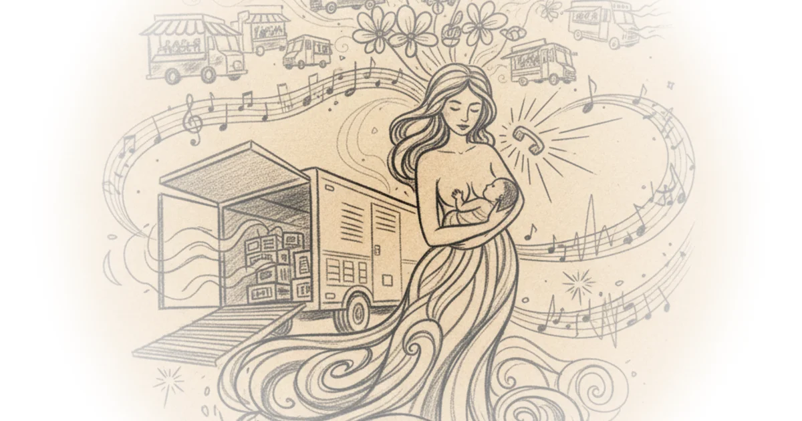

From Vegan Empress to Regenerative Rancher
Mollie Engelhart's conversation on Tetragrammaton traces one of the more dramatic ideological arcs in the food world: a lifelong vegetarian raised in Ithaca, New York by garment-industry hippies, who built a vegan restaurant empire in Los Angeles, only to dismantle her own belief system on a farm in Texas. The interview is sprawling and deeply personal, covering everything from the marijuana economy to mushroom visions to Kanye West's spontaneous generosity. But at its core, it is the story of someone whose convictions cracked under the weight of direct experience with nature.
The Vegan Cancellation That Started It All
The pivotal moment arrived in 2015, when Engelhart's stepmother posted an Instagram photo of her father eating his first hamburger in forty years. The cow had been sick, taken to UC Davis, and the vet recommended harvesting it rather than simply euthanizing it. The family decided to eat the meat. The internet lost its mind.

People are just completely crazy. And it impacted both of our businesses significantly. I lost 10% in topline sales for almost 18 months after this. And I think that they lost more.
Engelhart frames the vegan community's reaction as a precursor to broader cancel culture, and she is not entirely wrong. The fury directed at Cafe Gratitude and Sage over one man's dietary choice had nothing to do with what the restaurants served. It was about ideological purity, the demand that every person in a supply chain share identical values. That impulse, which would later consume American politics from all directions, found its early laboratory in vegan activism.
Vegans, I always say, were at the forefront of cancel culture. Like they loved to cancel somebody. You know, someone couldn't get pregnant, they add fish to their diet and they're a traitor.
The counterpoint is worth stating: communities built around ethical commitments naturally police those commitments. A vegan restaurant trading on its values does invite scrutiny when the family behind it starts raising and eating cattle. Engelhart dismisses the backlash as irrational, but she also acknowledges that she herself was "still pretty vegan in my mindset" at the time. The anger may have been disproportionate, but the sense of betrayal was not entirely manufactured.
The Farmer's Education
What makes Engelhart's journey compelling, rather than just another ex-vegan testimonial, is how granular her disillusionment became. It was not a single revelation but an accumulation of practical contradictions. She needed cow manure to make her compost work. She needed to kill ground squirrels to protect her avocado trees. She discovered that organic fertilizer is just slaughterhouse byproduct repackaged.
You start to realize that there's death in every bite of food whether you see it on the plate or not.
This observation, while not new to anyone who has read Lierre Keith or studied agricultural ecology, lands differently coming from someone who spent fifteen years running vegan restaurants in Los Angeles. Engelhart is not an armchair critic. She was the person standing in her kitchen, breastfeeding her baby, staring at a carton of oat milk while raw cow's milk sat in her refrigerator, and asking herself why she believed one was poison and the other was sacred.
If my breast milk is God's perfect food supporting her immune system in this environment that we live in and has all the perfection of God's creation, why is Buddha's milk filled with pus and disgusting and going to cause cancer? That doesn't make any sense.
The Business of Conviction
Engelhart's entrepreneurial history reads like a compressed version of every boom-and-bust cycle in California over the past two decades. Recording studio wiped out by ProTools. Marijuana operation crushed by market saturation and federal scrutiny. Real estate portfolio destroyed by the 2008 crash. Vegan restaurant empire gutted by the pandemic. Each time, she rebuilt.
The restaurant origin story is particularly revealing. She did not set out to build Sage; she started with a vegan ice cream kiosk inside a restaurant run by two Palestinian men who were substituting Costco croissants for vegan ones. She bought them out with marijuana money, married her sous chef after a one-night stand, and built the business into a multi-location operation doing seven to nine million dollars per store at its peak.
This is not a sanitized founder narrative. It is chaotic, improvised, and driven as much by circumstance as by vision. That honesty gives Engelhart credibility when she describes the pandemic's destruction of the restaurant industry, which she depicts not as a temporary disruption but as a permanent cultural shift.
We retrained humanity to eat at home. We retrained humanity to date on the internet, date by swiping left, swiping right, and by not letting people go out to eat for two and a half years, it made it totally acceptable to Netflix and chill.
Where Faith Overtakes Evidence
The interview takes a sharp turn when Engelhart moves from practical farming observations to broader claims about water memory, soil microbiology as divine consciousness, and the spiritual dimensions of local food. She cites Veda Austin's work on water memory, which remains far outside scientific consensus, and draws a line from soil health to gut health to trusting God that requires several leaps most listeners will not make.
What if that microbiology, the foundation of all of life, soil, that is a little piece of creation in you informing you. And that the more distant we get from that microbiology... we can't trust our guts. And then we can't trust ourselves. And then we can't trust each other. And then we invite the government to be in every single interaction.
The logic here moves from a defensible claim (healthy soil produces more nutritious food) through a plausible hypothesis (gut microbiome health affects cognition and mood) to a conspiratorial conclusion (disconnection from soil is why people accept government overreach). Each step sounds reasonable in isolation, but the chain as a whole is doing a lot of work.
Similarly, her account of a psilocybin vision that made her pro-life, while told with evident sincerity, reveals how thoroughly her worldview has been reorganized around personal spiritual experience rather than evidence or argument. She went from endorsing abortion rights to opposing them based on a voice she heard during a mushroom ceremony. Her father had a parallel experience on ayahuasca. Whether one finds this compelling depends entirely on whether one grants authority to psychedelic revelation.
The Policy Pragmatist
Engelhart is at her most interesting when she sets aside theology and talks food policy. Her proposal to restrict SNAP benefits to whole foods with fewer than eight ingredients is genuinely provocative. She points to Iowa's recent decision to exclude taxed junk food from SNAP and Oklahoma's Food is Medicine Act, which lets doctors prescribe local organic food covered by insurance, as models worth scaling.
If we made this change in the SNAP program, the subsidies for soda companies, which are 20% of 119 billion dollars... food deserts would start to disappear. Farmers markets will pop up in all these neighborhoods.
Critics would note that restricting SNAP purchases has been studied and debated for years, with concerns about paternalism toward low-income families and the practical reality that whole foods require time and equipment to prepare. But Engelhart's framing, paired with her advocacy for doubling SNAP dollars at farmers markets, at least attempts to address access rather than simply restricting choice. The Oklahoma insurance model, if its early results hold, could be genuinely transformative.
The Contradictions She Cannot See
Throughout the interview, Engelhart demonstrates a pattern common among people who have undergone radical ideological shifts: she applies rigorous skepticism to her former beliefs while extending almost none to her current ones. Veganism was an indoctrination she escaped. But the voice she heard on mushrooms is divine truth. Mainstream medicine is a system of lies, but raw milk fasts and organ capsules are self-evidently good. Cancel culture was wrong when vegans did it to her father, but she shows little awareness that her current community enforces its own orthodoxies.
Her claim that she lost everything to government bureaucracy and pandemic overreach is partially true, but it also elides the role of over-expansion, market shifts, and the inherent fragility of the restaurant business. Blaming the bureaucrat's pen for the collapse of a business model that was already under pressure from changing consumer habits is convenient but incomplete.
Bottom Line
Mollie Engelhart is a genuinely unusual figure: a third-generation vegetarian who became a regenerative rancher, a vegan restaurateur who now sells burgers made from cows she raised, a self-described former liberal who consults with the Heritage Foundation on soil policy. Her practical knowledge of farming, food systems, and restaurant economics is substantial and hard-won. When she talks about compost, soil biology, or the economics of small-scale agriculture, she speaks with authority that comes from doing the work. When she extends those observations into claims about water consciousness, divine purpose, and the spiritual roots of government overreach, the foundation becomes much less solid. The most valuable parts of this conversation are the ones closest to the dirt.